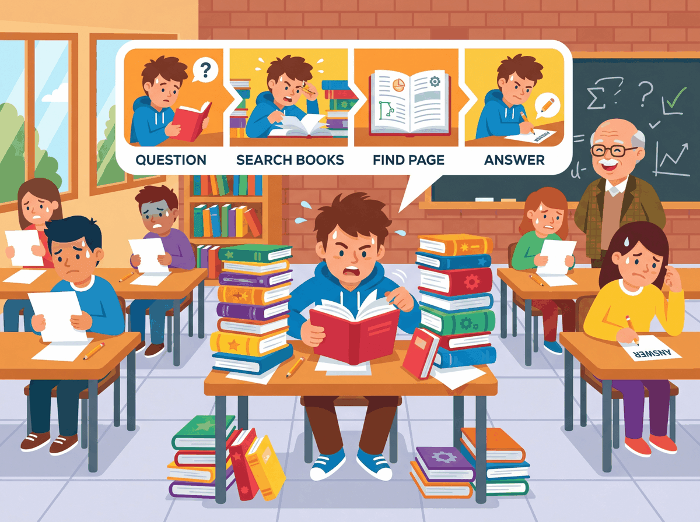

"Socratic tutoring, assessment generation, accessibility. The three places where an LLM actually moves the needle in a classroom."
Bert, Pedagogy-Reader AI Agent
Education is the LLM vertical where the upside is measured in learning outcomes for students who could not previously afford a human tutor, and where the failure mode is silently turning a tutor into a homework-completion service. The reference deployments by 2026 read like a partial answer to Benjamin Bloom's 1984 two-sigma problem (one-on-one tutoring raises average performance by roughly two standard deviations over conventional classroom instruction): Khan Academy's Khanmigo built on GPT-4 became the canonical Socratic-tutor reference and rolled out to free U.S. teacher access in 2024, Duolingo Max productized AI-driven language explanation and roleplay at consumer scale, and the open-textbook ecosystem (OpenStax plus LLM-augmented courseware partners) demonstrated that licensed curriculum corpora make grounded tutoring tractable for under-funded institutions. The published evidence is more modest than Bloom's original two sigma but still meaningful, with effect sizes typically in the 0.3-0.5 standard-deviation range for well-scaffolded deployments, concentrated in math, reading, and programming. Five categories of education LLM work now ship reliably: Socratic tutoring with domain-bounded retrieval, assessment generation and item banking, accessibility tooling, teacher support for lesson planning and grading, and programming education. The takeaway: the load-bearing design decision is the system prompt that refuses to give direct answers on assessment items, the product is the prompt, not the model.
Prerequisites
This section builds on the conversational-AI patterns from Chapter 37 and the RAG patterns from Chapter 32. Familiarity with the safety/ethics framing from Chapter 47 helps when reading the FERPA-and-COPPA subsection.
One-on-One Tutoring (Bloom's Two-Sigma, Sort Of)

The most consistent peer-reviewed finding of 2024-2026: LLM-based tutoring with strong scaffolding produces meaningful learning gains in math and reading, particularly for students whose schools cannot afford human tutors. Khanmigo (Khan Academy), Duolingo Max, Pearson's AI features, and Stanford's Tutor-CoPilot study all show positive effect sizes. The "two-sigma" replication is overclaimed; the gains are real but smaller (typically 0.3-0.5 standard deviations) and concentrated in well-defined skill domains.
Khanmigo is Khan Academy's GPT-4-powered tutor (developed in partnership with OpenAI and rolled out through Khan Labs in 2023, then expanded to free U.S. teacher access in 2024). The pedagogically-load-bearing decision is the system prompt: Khanmigo is explicitly instructed never to give the answer to a homework problem, only to ask leading questions, identify the specific step the student is stuck on, and prompt the student to attempt the next step. When a student tries to extract the answer ("just tell me what x equals"), Khanmigo refuses and rephrases the question. The retrieval layer is bounded to Khan Academy's vetted curriculum, so the tutor cannot answer questions outside the syllabus; the analytics layer reports back to teachers which students got stuck where. The published evaluation evidence shows modest but real learning gains (roughly 0.3-0.5 standard deviations on the targeted skills) and large engagement gains; the broader category of "Socratic-only tutors" has since been adopted by Magic School in K-12 and several university-level platforms.
The single design choice that separates an educational LLM from a homework-doing service is a system prompt that explicitly forbids giving direct answers on assessment items. The prompt typically reads something like: "You are a tutor. You never tell the student the answer. You ask questions that help the student discover the answer themselves. If the student tries to extract the answer, you politely refuse and ask a smaller scaffolding question instead." Combined with a domain-bounded retrieval index and an output-filter that flags any response containing an unhedged numeric or factual answer, this pattern is what makes Khanmigo, Magic School, Duolingo Max, and similar products pedagogically defensible. Removing the refusal makes the system a cheating tool. The prompt is the product.
Assessment Generation and Item Banking
LLMs generate first-draft assessment items (multiple-choice, short-answer, essay prompts) at scale. The economics are compelling: an LLM produces a year's worth of practice items in hours. The quality control is non-negotiable: every item needs psychometric review (difficulty, discrimination, fairness across groups) before deployment. Major testing organizations (College Board, ETS, GMAC) have all integrated LLM item generation into their workflows. The College Board's AP-exam item-bank development pipeline is the most-cited reference: LLMs produce dozens of candidate items per learning objective, content reviewers cull and refine, psychometric pre-testing on volunteer student panels validates the items, and only items that meet difficulty and discrimination thresholds enter production exams.
Accessibility
Text-to-speech, alt-text generation for images, simplified-language explanations for differently-abled learners, real-time captioning, ASL avatar interpretation. Some of the highest-leverage LLM applications in education by per-student impact. The pattern that works in production: LLM-generated accessibility content is reviewed by accessibility specialists before reaching production, and the system maintains an audit log of human-reviewed versions for compliance under Section 508 in the U.S. and the EU Accessibility Act. Several major textbook publishers (Pearson, McGraw-Hill, Cengage) have invested heavily in LLM-augmented accessibility production through 2024 to 2026.
Teacher Support: Lesson Planning, Grading Assistance, Differentiation
LLMs help teachers generate lesson plans aligned to standards, draft feedback on student work (which the teacher then reviews and personalizes), and produce differentiated versions of the same lesson for varying skill levels. Survey data from 2025-2026 shows teacher adoption higher than student adoption in K-12; the productivity wins are concentrated in the planning and grading time. Magic School AI and Diffit are the most-cited products in the U.S. K-12 market for teacher-facing LLM workflows, with district-level deployments through state-of-the-art FERPA-aligned procurement.
Programming Education
The unique case: programming students benefit from LLMs more than they suffer from them, because the LLM gives immediate, debugger-quality feedback on novice code in a way no human grader can. CMU, Stanford intro courses, and many community college programs have integrated LLM tutoring with positive outcomes. The pedagogical innovation is in the prompt: rather than "give me the code," the tutor asks the student to describe what their code should do, then runs the student's attempt against the spec and gives specific feedback on where it failed. CodeSignal, Codecademy, and Replit Teams have all built variants of this pattern; the published outcome studies show meaningfully accelerated novice progress.
Anthropic for Education
Beyond Khanmigo, the major LLM providers have launched education-specific offerings. Anthropic for Education provides Claude with enterprise-grade controls for universities (rolled out across 2024 to 2025 with deployments at Northeastern, the London School of Economics, Champlain College, and others). OpenAI's ChatGPT Edu targets the same university-and-large-district segment. Both products distinguish themselves on (1) data-handling terms compatible with FERPA, (2) admin-configurable guardrails for institution-specific policies, and (3) integration with university SSO and learning-management systems.
Three calibrated numbers anchor educational LLM economics. Effect size: the canonical reference is Bloom's 1984 two-sigma claim (one-on-one human tutoring raises performance by ~2.0 standard deviations); the published 2023-2025 evaluations of LLM tutoring report effect sizes in the 0.3 to 0.5 standard deviation range for well-scaffolded deployments, concentrated in math, reading, and programming. Stanford's Tutor-CoPilot study (Wang et al., 2024) reported a 0.46 sd gain on the targeted skills; Khan Academy's internal evaluations report a similar range. The number is meaningful but well below the historical human-tutor benchmark.
Scale: Khanmigo reached over 500,000 active users by late 2024 across the U.S. teacher-free tier and paid Khan Academy Kids tiers. Magic School AI passed 4 million educators on its platform by mid-2025 across more than 60 percent of U.S. school districts. Duolingo Max reached 1.5+ million paying subscribers at $30/month within 18 months of launch. The aggregate addressable market is large, but the institution-tier revenue concentrates in a small number of platforms.
Per-student cost: at frontier-model 2026 pricing of ~$1.50/M input and ~$7.50/M output tokens, a student session of ~5,000 input + 1,500 output tokens costs roughly $0.02. At 10 sessions/week over a 36-week school year, that is ~$7-8/student/year in raw inference. Add per-student licensing of $5-15/year for FERPA-tier platforms and the all-in district cost is ~$15-25/student/year. The marginal cost of LLM tutoring is small relative to the $14,000 average U.S. per-pupil public-school spend, which is why the procurement question is rarely "can we afford it?" and usually "which platform fits our pedagogy?"
- Chapter 32 (Retrieval-Augmented Generation) for the domain-bounded retrieval pattern that distinguishes a tutor from a homework-doer.
- Chapter 37 (Conversational AI) for the conversational-AI stack underlying tutoring deployments.
- Chapter 21 (Instruction Tuning and RLHF) for the technique stack that produces refusal-on-direct-answers behavior.
- Chapter 47 (Adversarial Security and Red Team) for the prompt-injection threat model that constrains Socratic-tutor system-prompt design.
- Chapter 42 (Evaluation Foundations) for the effect-size methodology used in tutoring outcome studies.
Show Answer
Show Answer
Show Answer
What Comes Next
Section 75.2 turns to the failure modes specific to education: the plagiarism-detector mirage, hallucinated citations in student work, learning-loss through over-reliance, and FERPA exposure on student data.
What's Next?
In the next section, Section 75.2: Failure Modes Specific to Education, we build on the material covered here.